Introduction
Nanostring GeoMX DSP is a popular spatial transcriptomics technology for formalin fixed paraffin embedded (FFPE) tissues even though it doesn’t have single cell resolution. More recently, Nanostring developed a single cell resolution single molecule FISH based technology for FFPE tissue called CosMX, which is described in (He et al. 2021). FFPE is a common way to preserve and archive tissue, and in some cases, the only samples available may all be FFPE.
The CosMX dataset for non-small cell lung cancer is also described in (He et al. 2021). The processed data is available to download from the Nanostring website. The gene count matrix, cell metadata, and cell segmentation polygon coordinates were downloaded from the Nanostring website as CSV files and read into R as data frames. The gene count matrix was then converted to a sparse matrix. The cell metadata contains centroid coordinates of the cells. The cell polygon data frames was converted into an sf data frame with the df2sf() function in SpatialFeatureExperiment (SFE). These were then used to construct an SFE object. Cell segmentation is only available in one z-plane.
library(Voyager)
library(SFEData)
library(SingleCellExperiment)
#> Loading required package: SummarizedExperiment
#> Loading required package: MatrixGenerics
#> Loading required package: matrixStats
#>
#> Attaching package: 'MatrixGenerics'
#> The following objects are masked from 'package:matrixStats':
#>
#> colAlls, colAnyNAs, colAnys, colAvgsPerRowSet, colCollapse,
#> colCounts, colCummaxs, colCummins, colCumprods, colCumsums,
#> colDiffs, colIQRDiffs, colIQRs, colLogSumExps, colMadDiffs,
#> colMads, colMaxs, colMeans2, colMedians, colMins, colOrderStats,
#> colProds, colQuantiles, colRanges, colRanks, colSdDiffs, colSds,
#> colSums2, colTabulates, colVarDiffs, colVars, colWeightedMads,
#> colWeightedMeans, colWeightedMedians, colWeightedSds,
#> colWeightedVars, rowAlls, rowAnyNAs, rowAnys, rowAvgsPerColSet,
#> rowCollapse, rowCounts, rowCummaxs, rowCummins, rowCumprods,
#> rowCumsums, rowDiffs, rowIQRDiffs, rowIQRs, rowLogSumExps,
#> rowMadDiffs, rowMads, rowMaxs, rowMeans2, rowMedians, rowMins,
#> rowOrderStats, rowProds, rowQuantiles, rowRanges, rowRanks,
#> rowSdDiffs, rowSds, rowSums2, rowTabulates, rowVarDiffs, rowVars,
#> rowWeightedMads, rowWeightedMeans, rowWeightedMedians,
#> rowWeightedSds, rowWeightedVars
#> Loading required package: GenomicRanges
#> Loading required package: stats4
#> Loading required package: BiocGenerics
#>
#> Attaching package: 'BiocGenerics'
#> The following objects are masked from 'package:stats':
#>
#> IQR, mad, sd, var, xtabs
#> The following objects are masked from 'package:base':
#>
#> anyDuplicated, aperm, append, as.data.frame, basename, cbind,
#> colnames, dirname, do.call, duplicated, eval, evalq, Filter, Find,
#> get, grep, grepl, intersect, is.unsorted, lapply, Map, mapply,
#> match, mget, order, paste, pmax, pmax.int, pmin, pmin.int,
#> Position, rank, rbind, Reduce, rownames, sapply, setdiff, sort,
#> table, tapply, union, unique, unsplit, which.max, which.min
#> Loading required package: S4Vectors
#>
#> Attaching package: 'S4Vectors'
#> The following objects are masked from 'package:base':
#>
#> expand.grid, I, unname
#> Loading required package: IRanges
#> Loading required package: GenomeInfoDb
#> Loading required package: Biobase
#> Welcome to Bioconductor
#>
#> Vignettes contain introductory material; view with
#> 'browseVignettes()'. To cite Bioconductor, see
#> 'citation("Biobase")', and for packages 'citation("pkgname")'.
#>
#> Attaching package: 'Biobase'
#> The following object is masked from 'package:MatrixGenerics':
#>
#> rowMedians
#> The following objects are masked from 'package:matrixStats':
#>
#> anyMissing, rowMedians
library(SpatialExperiment)
library(scater)
#> Loading required package: scuttle
#> Loading required package: ggplot2
library(scran)
library(bluster)
library(ggplot2)
library(patchwork)
library(stringr)
library(spdep)
#> Loading required package: sp
#>
#> Attaching package: 'sp'
#> The following object is masked from 'package:IRanges':
#>
#> %over%
#> Loading required package: spData
#> To access larger datasets in this package, install the spDataLarge
#> package with: `install.packages('spDataLarge',
#> repos='https://nowosad.github.io/drat/', type='source')`
#> Loading required package: sf
#> Linking to GEOS 3.8.0, GDAL 3.0.4, PROJ 6.3.1; sf_use_s2() is TRUE
library(BiocParallel)
library(BiocSingular)
theme_set(theme_void())
(sfe <- HeNSCLCData())
#> snapshotDate(): 2022-10-17
#> see ?SFEData and browseVignettes('SFEData') for documentation
#> downloading 1 resources
#> retrieving 1 resource
#> loading from cache
#> require("SpatialFeatureExperiment")
#> class: SpatialFeatureExperiment
#> dim: 980 100290
#> metadata(0):
#> assays(1): counts
#> rownames(980): AATK ABL1 ... NegPrb22 NegPrb23
#> rowData names(3): means vars cv2
#> colnames(100290): 1_1 1_2 ... 30_4759 30_4760
#> colData names(17): Area AspectRatio ... nCounts nGenes
#> reducedDimNames(0):
#> mainExpName: NULL
#> altExpNames(0):
#> spatialCoords names(2) : CenterX_global_px CenterY_global_px
#> imgData names(1): sample_id
#>
#> Geometries:
#> colGeometries: centroids (POINT), cellSeg (POLYGON)
#>
#> Graphs:
#> sample01:
sfe
#> class: SpatialFeatureExperiment
#> dim: 980 100290
#> metadata(0):
#> assays(1): counts
#> rownames(980): AATK ABL1 ... NegPrb22 NegPrb23
#> rowData names(3): means vars cv2
#> colnames(100290): 1_1 1_2 ... 30_4759 30_4760
#> colData names(17): Area AspectRatio ... nCounts nGenes
#> reducedDimNames(0):
#> mainExpName: NULL
#> altExpNames(0):
#> spatialCoords names(2) : CenterX_global_px CenterY_global_px
#> imgData names(1): sample_id
#>
#> Geometries:
#> colGeometries: centroids (POINT), cellSeg (POLYGON)
#>
#> Graphs:
#> sample01:Only the first biological replicate is included in the SFEData package. This biological replicate has 980 features and 100,290 cells. Take a look at the cells in space:
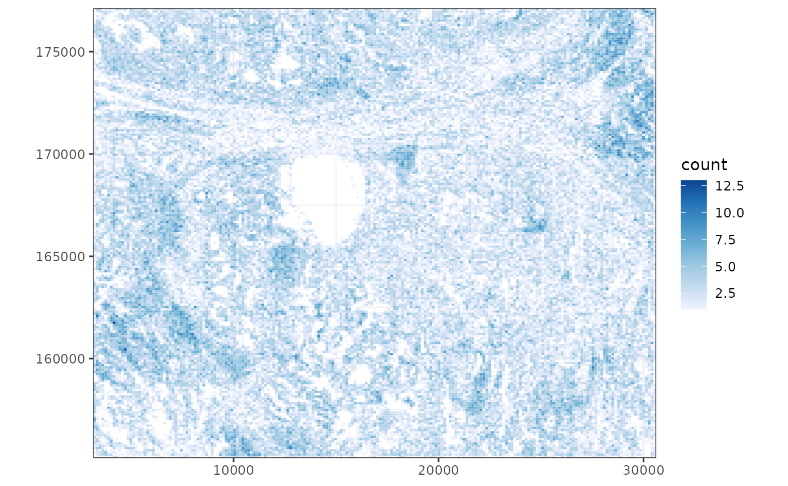
With single cell resolution, a lot of the details can be seen, although there’s some artifact from borders of fields of view (FOVs).
Quality control (QC)
Cells
Single cell RNA-seq (scRNA-seq) technologies typically don’t quantify cell morphology, and gene expression in Visium doesn’t have single cell resolution. Here for single cell resolution smFISH based data, each cell not only has gene expression and related QC metrics such as total number of transcripts detected and number of genes detected, but also cell morphology such as area (in the z-plane where the segmentation polygons are provided) and aspect ratio. Area is relevant to QC since it can flag falsely undersegmented cells, i.e. several cells falsely considered as one by the cell segmentation program. However, since a pre-defined gene panel is used and mitochondrially encoded genes are not quantified, the scRNA-seq QC metric of proportion of mitochondrially encoded counts is not applicable.
Some QC metrics are precomputed and are stored in colData
names(colData(sfe))
#> [1] "Area" "AspectRatio" "Width"
#> [4] "Height" "Mean.MembraneStain" "Max.MembraneStain"
#> [7] "Mean.PanCK" "Max.PanCK" "Mean.CD45"
#> [10] "Max.CD45" "Mean.CD3" "Max.CD3"
#> [13] "Mean.DAPI" "Max.DAPI" "sample_id"
#> [16] "nCounts" "nGenes"Cell area, aspect ratio, marker and stain intensities, i.e. all columns before “sample_id” come from Nanostring’s website. The sf package can compute areas of the cell polygons. In R, the EBImage package can compute more morphological metrics such as aspect ratio, eccentricity, orientation, and etc., but it requires the data to be converted to raster. OpenCV can compute more morphological metrics for polygons without converting to raster, but it needs to be called from Python or C++. Since the math behind many basic morphological metrics is pretty simple, we may add those to Voyager in a future version.
# Function to plot violin plot for distribution and spatial at once
plot_violin_spatial <- function(sfe, feature) {
violin <- plotColData(sfe, feature)
spatial <- plotSpatialFeature(sfe, feature, colGeometryName = "cellSeg")
violin + spatial +
plot_layout(widths = c(1, 2))
}Number of transcript spots detected per cell
plot_violin_spatial(sfe, "nCounts")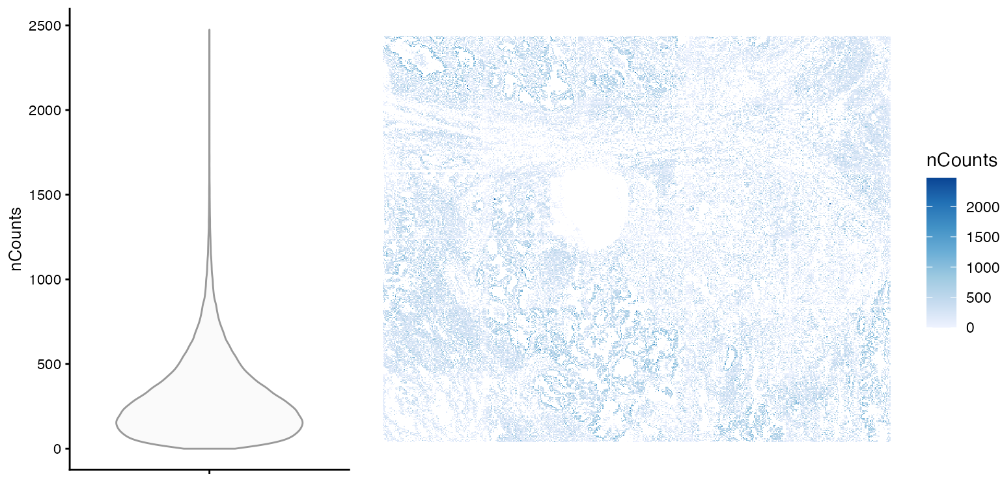
summary(sfe$nCounts)
#> Min. 1st Qu. Median Mean 3rd Qu. Max.
#> 0.0 135.0 248.0 302.8 409.0 2475.0Number of genes (out of 980) detected per cell
plot_violin_spatial(sfe, "nGenes")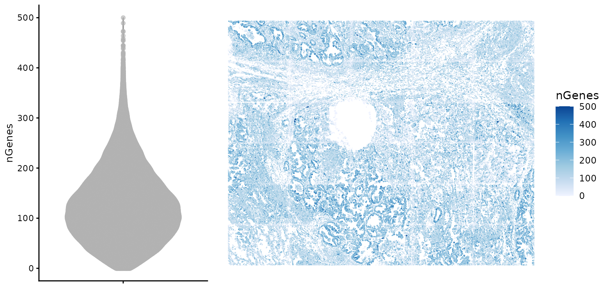
summary(sfe$nGenes)
#> Min. 1st Qu. Median Mean 3rd Qu. Max.
#> 0.0 75.0 119.0 127.1 171.0 500.0Based on the spatial plot, it seems that nCounts and nGenes are biologically relevant, but there are cells with no transcripts detected.
How nCounts relates to nGenes
colData(sfe) |>
as.data.frame() |>
ggplot(aes(nCounts, nGenes)) +
geom_bin2d(bins = 100) +
scale_fill_distiller(palette = "Blues", direction = 1) +
theme_bw()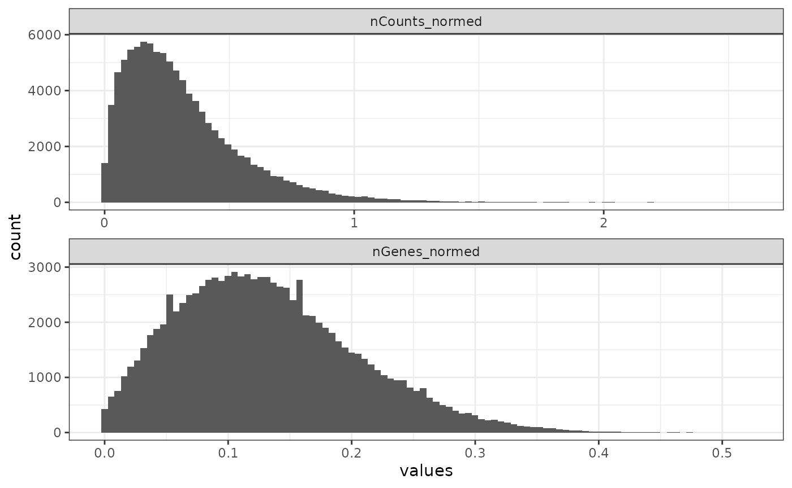
What’s the nature of the cells without transcripts?
plotSpatialFeature(sfe, "is_empty", "cellSeg")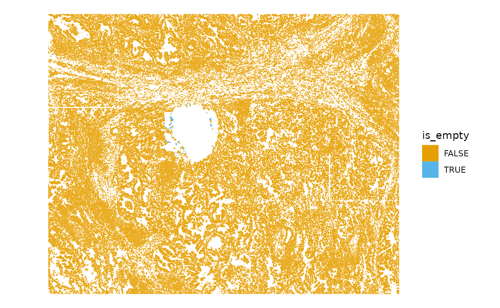
The cells without transcripts are in the central cavity.
plotColData(sfe, x = "Area", y = "is_empty")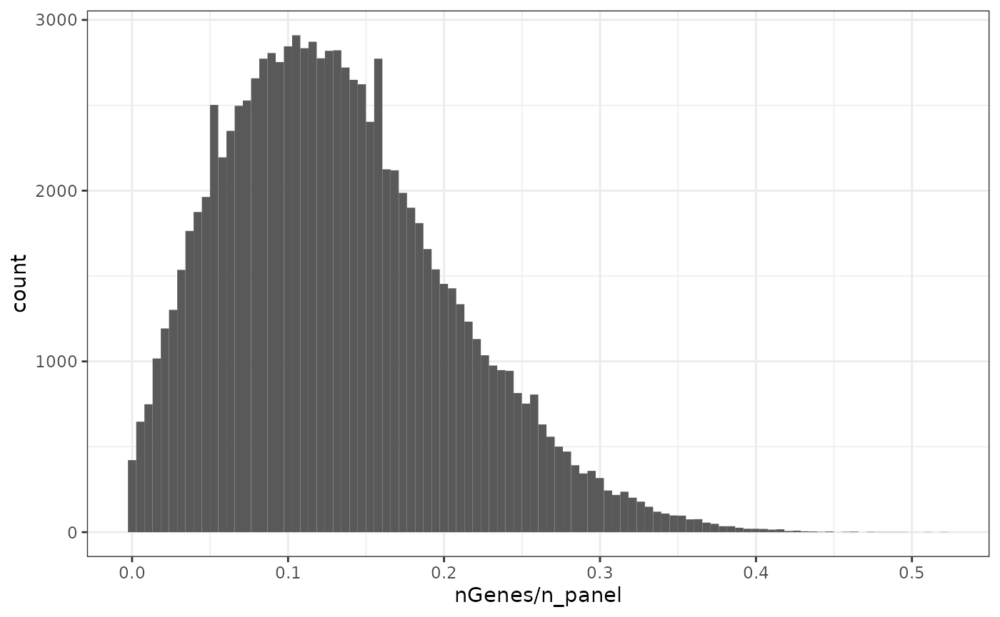
The “empty” cells tend to be smaller than other cells but there are also some really large ones.
Cell area distribution
plot_violin_spatial(sfe, "Area")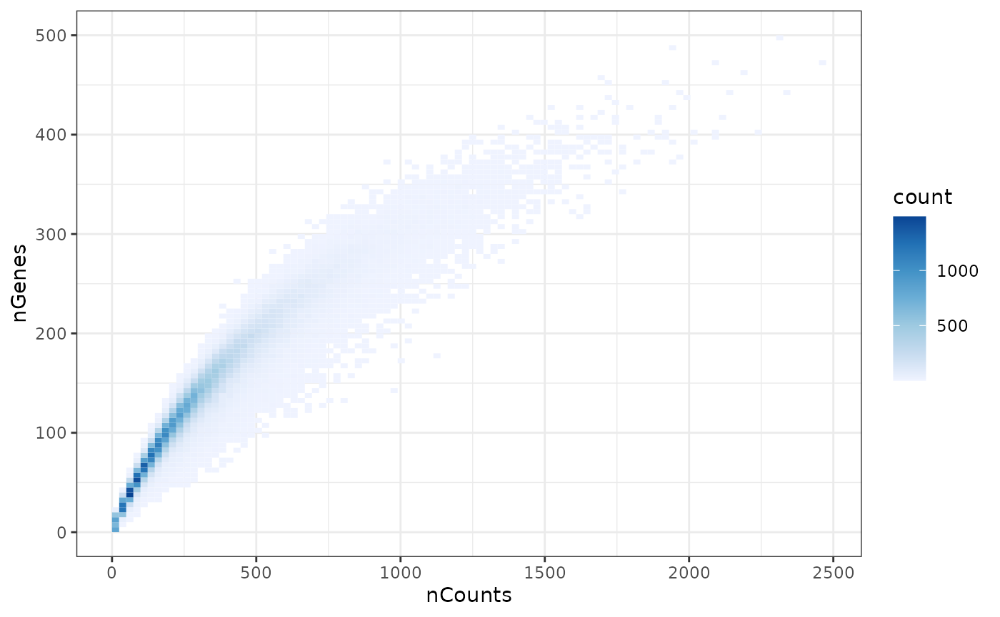
Larger cells are more likely to be found in certain areas of the tissue. It could be biological, or that under-segmentation is more likely for that cell type or that tissue region.
How does area relate to total counts?
colData(sfe) |>
as.data.frame() |>
ggplot(aes(nCounts, Area)) +
geom_bin2d(bins = 100) +
scale_fill_distiller(palette = "Blues", direction = 1) +
theme_bw()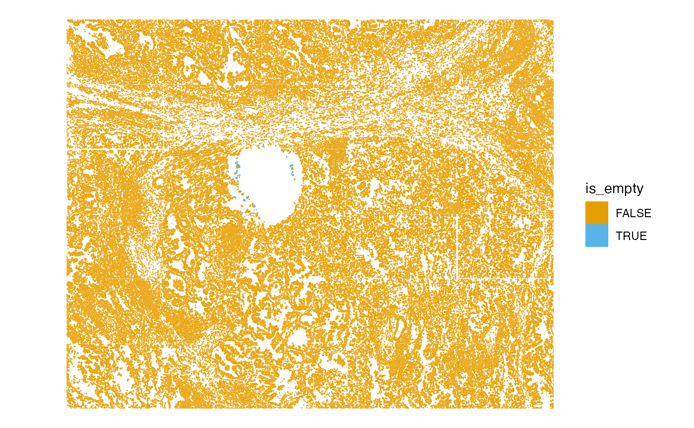
While there may vaguely seem that cells with more total counts tend to be larger (at least in this z-plane), there are some cells that are large but have low total counts.
Negative control probes are used in this dataset for QC. Here we calculate the proportion of transcripts attributed to the negative controls.
neg_inds <- str_detect(rownames(sfe), "^NegPrb")
# Number of negative control probes
sum(neg_inds)
#> [1] 20
colData(sfe)$prop_neg <- colSums(counts(sfe)[neg_inds,])/colData(sfe)$nCounts
plot_violin_spatial(sfe, "prop_neg")
#> Warning: Removed 142 rows containing non-finite values (stat_ydensity).
#> Warning: Removed 142 rows containing missing values (position_quasirandom).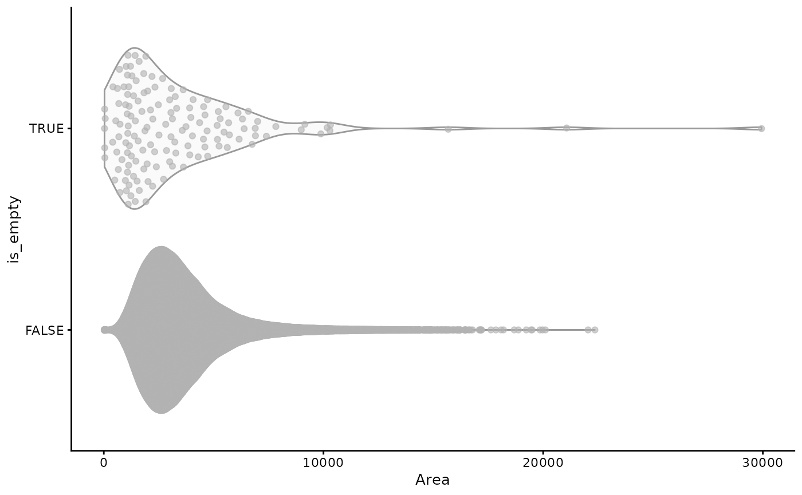
The NA’s are empty cells, and the proportion is very low except for a few outliers. How does prop_neg relate to nCounts?
plotColData(sfe, x = "nCounts", y = "prop_neg")
#> Warning: Removed 142 rows containing missing values (geom_point).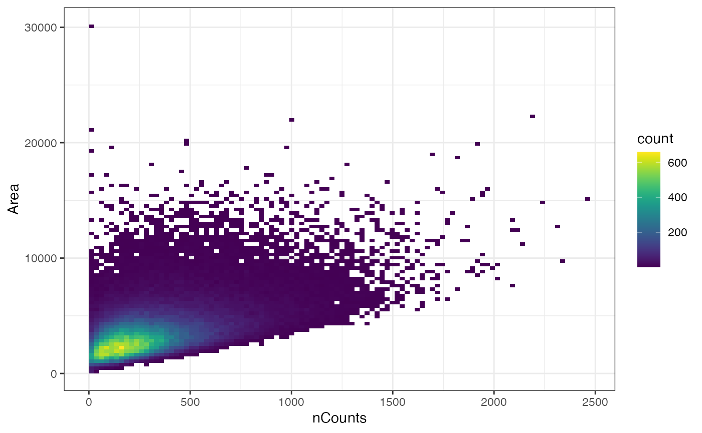
colData(sfe) |>
as.data.frame() |>
ggplot(aes(nCounts, prop_neg)) +
geom_bin2d(bins = 100) +
scale_fill_viridis_c(trans = "log10") +
theme_bw()
#> Warning: Removed 142 rows containing non-finite values (stat_bin2d).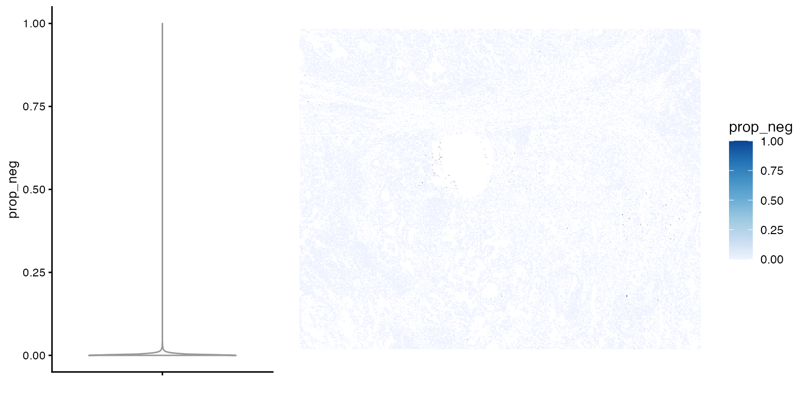
This looks kind of like the proportion of mitochondrial counts vs. nCounts plot for scRNA-seq, where cells with fewer total counts tend to have higher proportion of mitochondrial counts.
# The zeros are removed
as.data.frame(colData(sfe)) |>
ggplot(aes(prop_neg)) +
geom_histogram(bins = 100) +
scale_x_log10() +
annotation_logticks(sides = "b") +
theme_bw()
#> Warning: Transformation introduced infinite values in continuous x-axis
#> Warning: Removed 59213 rows containing non-finite values (stat_bin).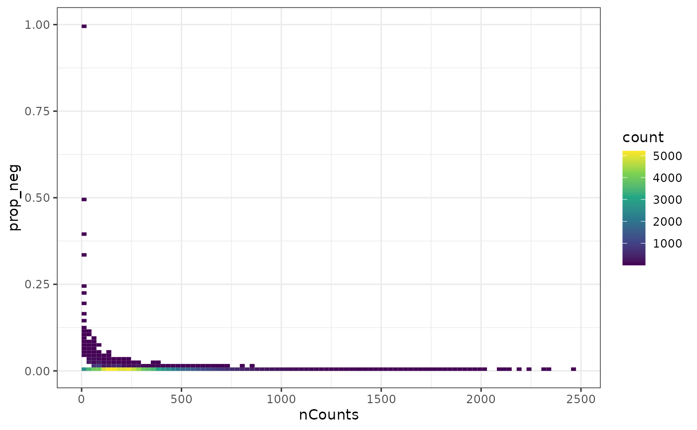
The distribution is not obviously bimodal, and since the x-axis is log transformed to better visualize the distribution, the 0’s have been removed. It’s kind of arbitrary; for now we’ll remove cells with more than 10% of transcripts from negative controls.
# Remove low quality cells
(sfe <- sfe[,!sfe$is_empty & sfe$prop_neg < 0.1])
#> class: SpatialFeatureExperiment
#> dim: 980 100095
#> metadata(0):
#> assays(1): counts
#> rownames(980): AATK ABL1 ... NegPrb22 NegPrb23
#> rowData names(3): means vars cv2
#> colnames(100095): 1_1 1_2 ... 30_4759 30_4760
#> colData names(19): Area AspectRatio ... is_empty prop_neg
#> reducedDimNames(0):
#> mainExpName: NULL
#> altExpNames(0):
#> spatialCoords names(2) : CenterX_global_px CenterY_global_px
#> imgData names(1): sample_id
#>
#> Geometries:
#> colGeometries: centroids (POINT), cellSeg (POLYGON)
#>
#> Graphs:
#> sample01:After removing the low quality cells, there are 100,095 cells left.
Genes
as.data.frame(rowData(sfe)) |>
ggplot(aes(means, vars)) +
geom_bin2d(bins = 50) +
geom_abline(slope = 1, intercept = 0, color = "red") +
scale_x_log10() + scale_y_log10() +
scale_fill_distiller(palette = "Blues", direction = 1) +
annotation_logticks() +
coord_equal() +
theme_bw()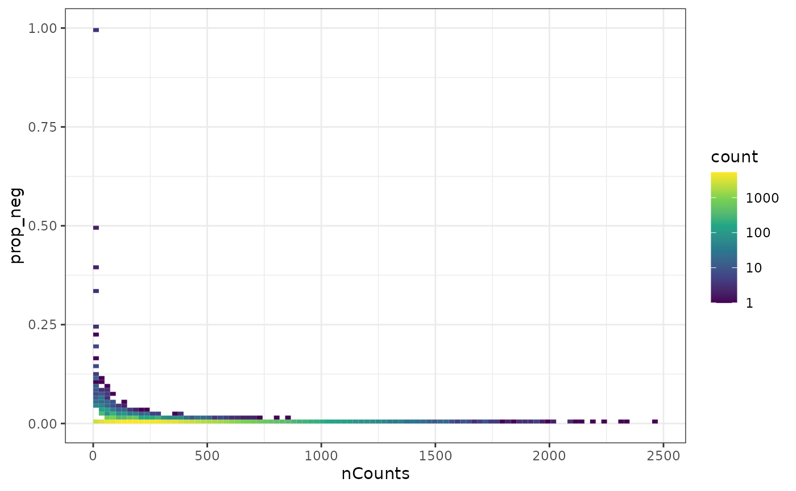
The red line \(y = x\) is expected from Poisson data. Gene expression in this dataset has more variance than expected from Poisson, even for gene with lower expression. How about for the negative controls?
as.data.frame(rowData(sfe)[neg_inds,]) |>
ggplot(aes(means, vars)) +
geom_point() +
geom_abline(slope = 1, intercept = 0, color = "red") +
scale_x_log10() + scale_y_log10() +
annotation_logticks() +
coord_equal() +
theme_bw()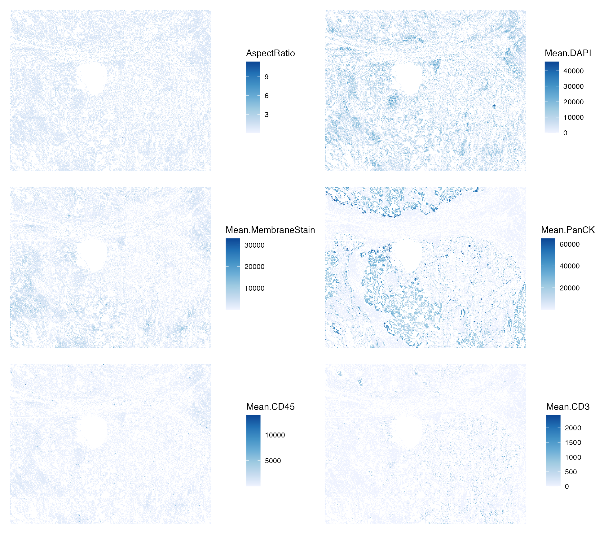
Among the “high quality” cells, the negative controls still have higher variance relative to mean compared to Poisson.
Negative controls vs. real genes
rowData(sfe)$is_neg <- neg_inds
plotRowData(sfe, x = "means", y = "is_neg") +
scale_y_log10() +
annotation_logticks(sides = "b")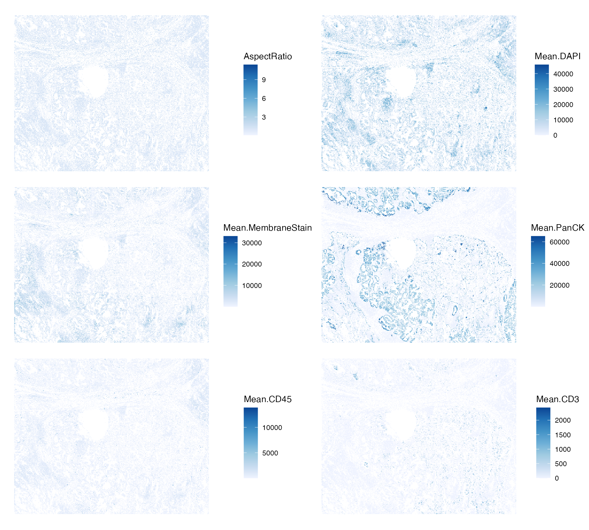
The negative controls have lower mean “expression” than the vast majority of real genes.
Spatial autocorrelation in QC metrics
A spatial neighborhood graph is required for spatial dependence analyses. Without a benchmark, we don’t yet know which type of neighborhood graph is the best for which purpose. For now, just to demonstrate software usage, we use the k nearest neighborhood graph with distance based edge weights, as commonly done in graph based clustering in scRNA-seq, although we don’t yet know the best value for k in each scenario. Methods to find spatial neighborhood graphs in spdep other than knearneigh() and dnearneigh() are not recommended for larger datasets. Methods to find approximate nearest neighbors such as Annoy (AnnoyParam()) and HNSW (HnswParam()), as supported by the bluster and BiocNeighbors packages might speed up finding these graphs, but we haven’t formally benchmarked them. For the purpose of this vignette, say use \(k = 5\), and the execution time isn’t outrageous. The argument style = "W" is to row normalize the adjacency matrix of the spatial neighborhood graph as this is necessary for Moran scatter plot.
system.time(
colGraph(sfe, "knn5") <- findSpatialNeighbors(sfe, method = "knearneigh",
dist_type = "idw", k = 5,
style = "W")
)
#> Warning in knearneigh(coords, k = k, use_kd_tree = use_kd_tree, longlat =
#> FALSE): dnearneigh: longlat argument overrides object
#> user system elapsed
#> 207.734 0.012 207.761It took about a minute, not bad. Now compute Moran’s I for some cell QC metrics
features_use <- c("nCounts", "nGenes", "Area", "AspectRatio")
sfe <- colDataMoransI(sfe, features_use, colGraphName = "knn5")
colFeatureData(sfe)[features_use,]
#> DataFrame with 4 rows and 2 columns
#> moran_sample01 K_sample01
#> <numeric> <numeric>
#> nCounts 0.386673 6.80818
#> nGenes 0.434654 3.19599
#> Area 0.198180 8.96966
#> AspectRatio 0.256196 43.05666Positive spatial autocorrelation is suggested, which is stronger in nCounts and nGenes.
What are the length scales of spatial autocorrelation for these QC metrics? It would be nice if the lagged neighborhood graphs can be stored and reused for all features rather than recomputed for each feature as in spdep::sp.correlogram() called behind the scene here. This takes a few minutes to run. Another way to find the lengthscale of spatial autocorrelation is to bin the cells into bins of different sizes and then find spatial autocorrelation at each bin size, which probably is faster than finding lagged values at higher and higher neighborhoods for each feature as the binning is done once for all features.
system.time(
sfe <- colDataUnivariate(sfe, "sp.correlogram", features = features_use,
colGraphName = "knn5", order = 6, zero.policy = TRUE,
BPPARAM = MulticoreParam(2))
)
#> user system elapsed
#> 240.214 1.712 244.337Note that MulticoreParam() doesn’t work on Windows; this vignette was built on Linux. Use SnowParam() or DoparParam() for Windows. See ?BiocParallelParam for the available parallel processing backends. We did not notice significant performance differences between ShowParam() and MulticoreParam() in this context.
plotCorrelogram(sfe, features_use) +
theme_bw()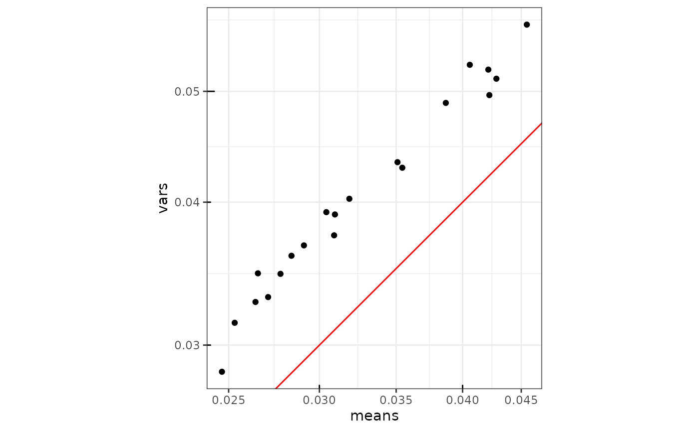
They seem to have similar length scales, but aspect ratios tend to decay more quickly.
Moran’s scatter plot for nCounts.
sfe <- colDataUnivariate(sfe, "moran.plot", "nCounts", colGraphName = "knn5")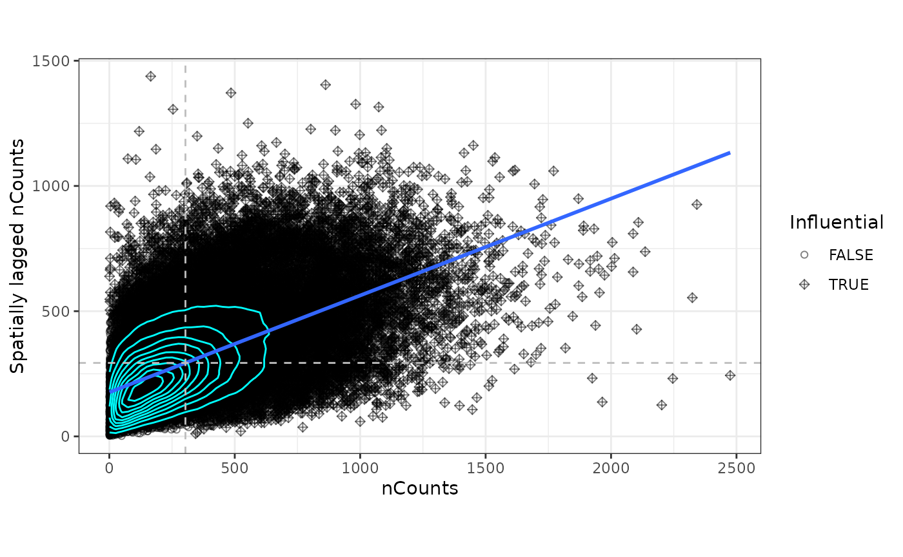
There are no obvious clusters in this plot.
Local Moran’s I for nCounts
sfe <- colDataUnivariate(sfe, "localmoran", "nCounts", colGraphName = "knn5")
plotLocalResult(sfe, "localmoran", "nCounts", colGeometryName = "cellSeg",
divergent = TRUE, diverge_center = 0)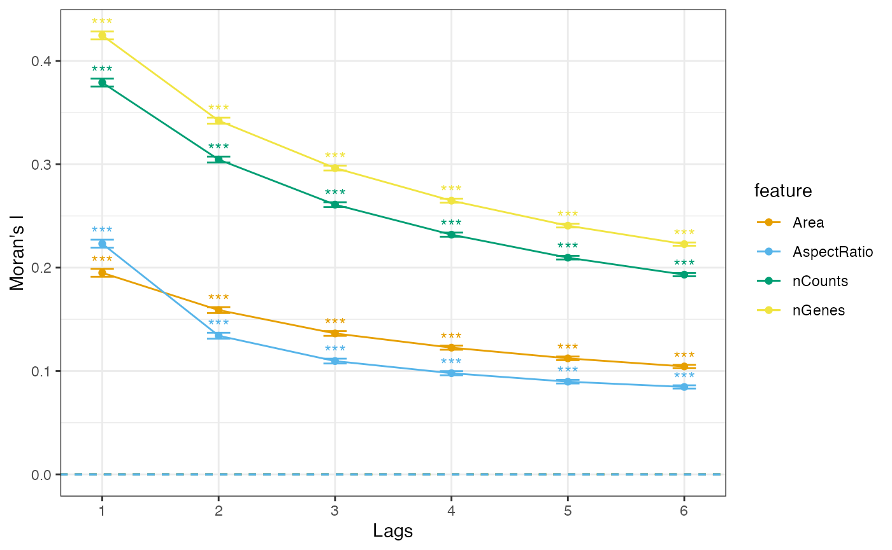
Cool, it appears that some histological regions tend to be more homogenous in nCounts.
Data normalization
Given that there may be some relationship between cell size and total counts, and that total counts may be biological and thus not purely treated as technical, questions are raised about data normalization and how it should be different from the standard scRNA-seq practices. For instance, what are technical contributions to total counts for this kind of data? Furthermore, what to do with cell area, since part of it is technical, in where the z-plane of cell segmentation polygons intersects each cell, but for some cell types, it could be biological? Also, how would different methods of data normalization affect spatial autocorrelation? Should spatial autocorrelation be used in some ways when normalizing data? Besides correcting for technical effects and making gene expression in cells with different total counts more comparable, data normalization stabilizes variance and tries to make the data more normally distributed since many statistical methods assume normally distributed data. So while we don’t know the best practice to normalize this kind of data, we will still normalize the data for downstream analyses.
sfe <- logNormCounts(sfe)
# Note: on your computer, you can put progressbar = TRUE inside MulticoreParam()
# to show progress bar. This applies to any BiocParallParam.
sfe <- runMoransI(sfe, features = rownames(sfe),
BPPARAM = MulticoreParam(2))Moran’s I
Do real genes tend to have more spatial autocorrelation than negative controls?
plotRowData(sfe, x = "moran_sample01", y = "is_neg")It seems that at least at the shorter length scale captured by the k nearest neighbor graph, most genes don’t have strong spatial autocorrelation while some have strong positive spatial autocorrelation. In contrast, Moran’s I for the negative controls is closely packed around 0, indicating lack of spatial autocorrelation, which is a good sign, that there is no evidence of a technical artifact that manifests as a spatial trend manifest in the negative controls.
What are the genes with the highest Moran’s I?
top_moran <- rownames(sfe)[order(rowData(sfe)$moran_sample01, decreasing = TRUE)[1:4]]
plotSpatialFeature(sfe, top_moran, colGeometryName = "cellSeg")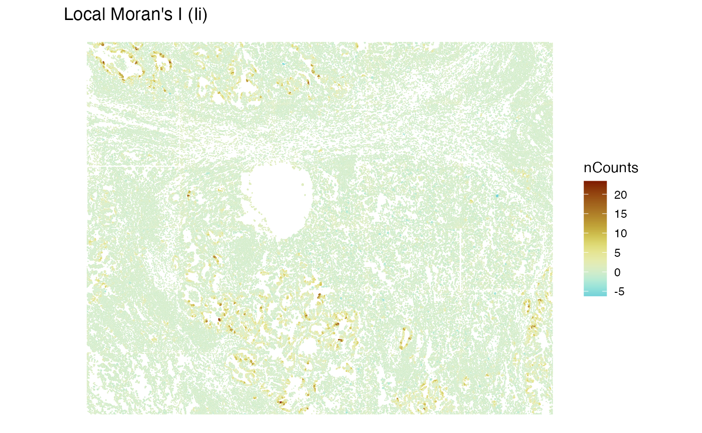
They all highlight the same histological regions. It could be that other regions are not as spatially organized, or that a short length scale is used for Moran’s I here but the correlogram shows that Moran’s I decays after the first order neighbors. I wonder how using a longer length scale would change the results.
Non-spatial dimension reduction and clustering
set.seed(29)
sfe <- runPCA(sfe, ncomponents = 30, scale = TRUE, BSPARAM = IrlbaParam())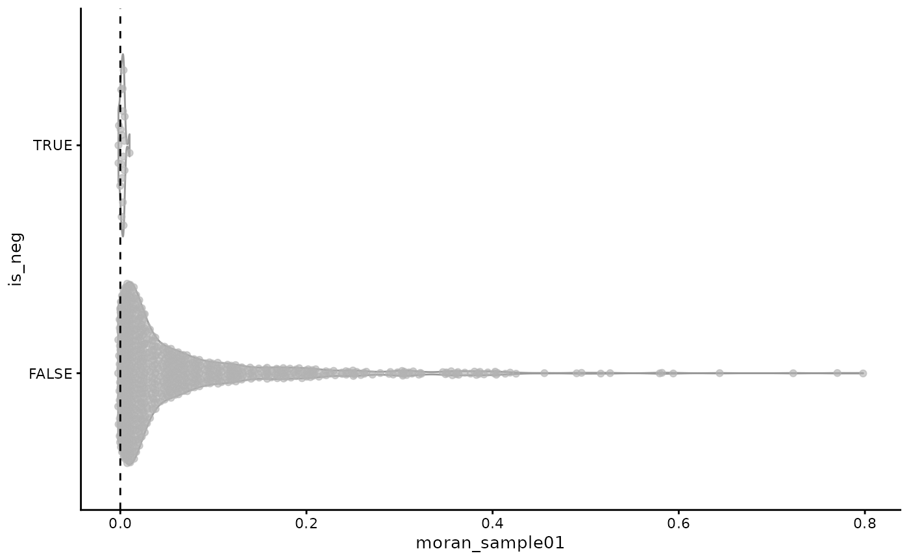
plotDimLoadings(sfe) + theme_bw()
spatialReducedDim(sfe, "PCA", 6, colGeometryName = "cellSeg", divergent = TRUE,
diverge_center = 0, ncol = 2)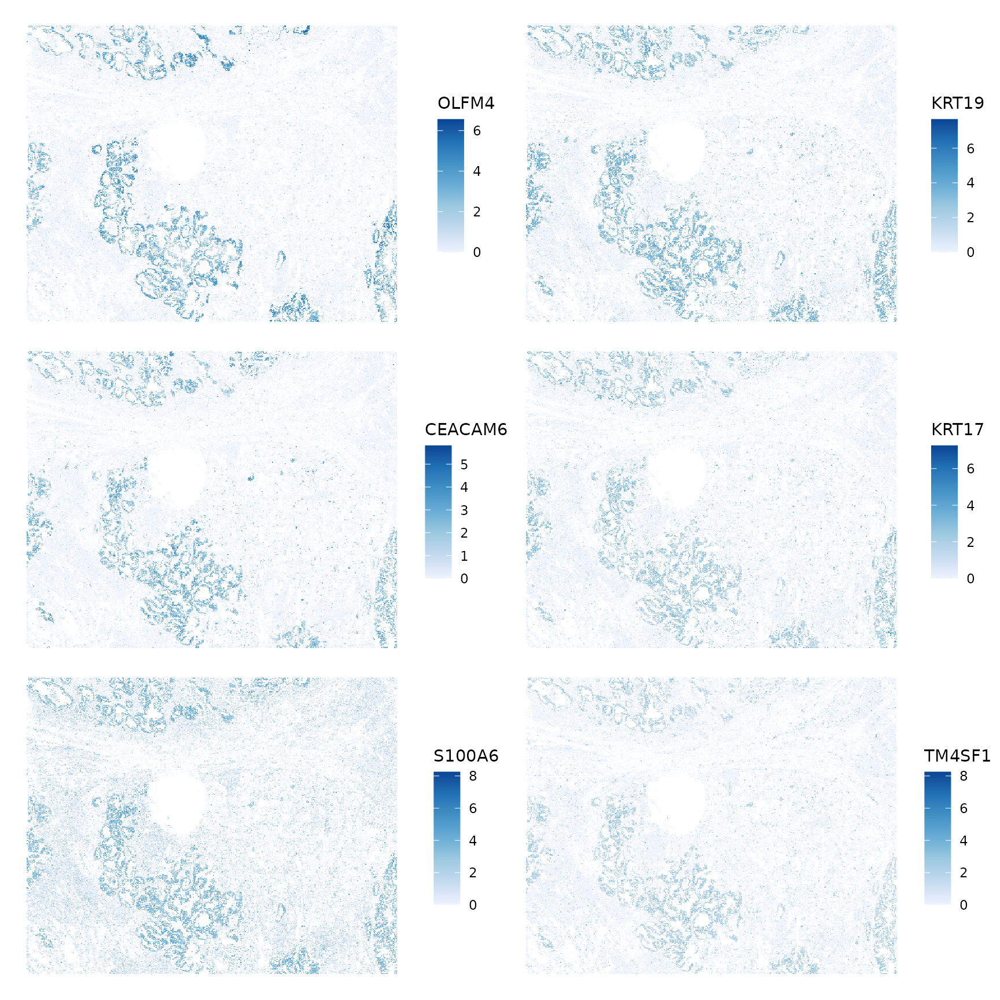
It’s aRt!
Non-spatial clustering and locating the clusters in space
colData(sfe)$cluster <- clusterRows(reducedDim(sfe, "PCA")[,1:15],
BLUSPARAM = SNNGraphParam(
cluster.fun = "leiden",
cluster.args = list(
resolution_parameter = 0.5,
objective_function = "modularity")))
#> Warning in (function (to_check, X, clust_centers, clust_info, dtype, nn, :
#> detected tied distances to neighbors, see ?'BiocNeighbors-ties'
plotPCA(sfe, ncomponents = 4, colour_by = "cluster") +
geom_density2d()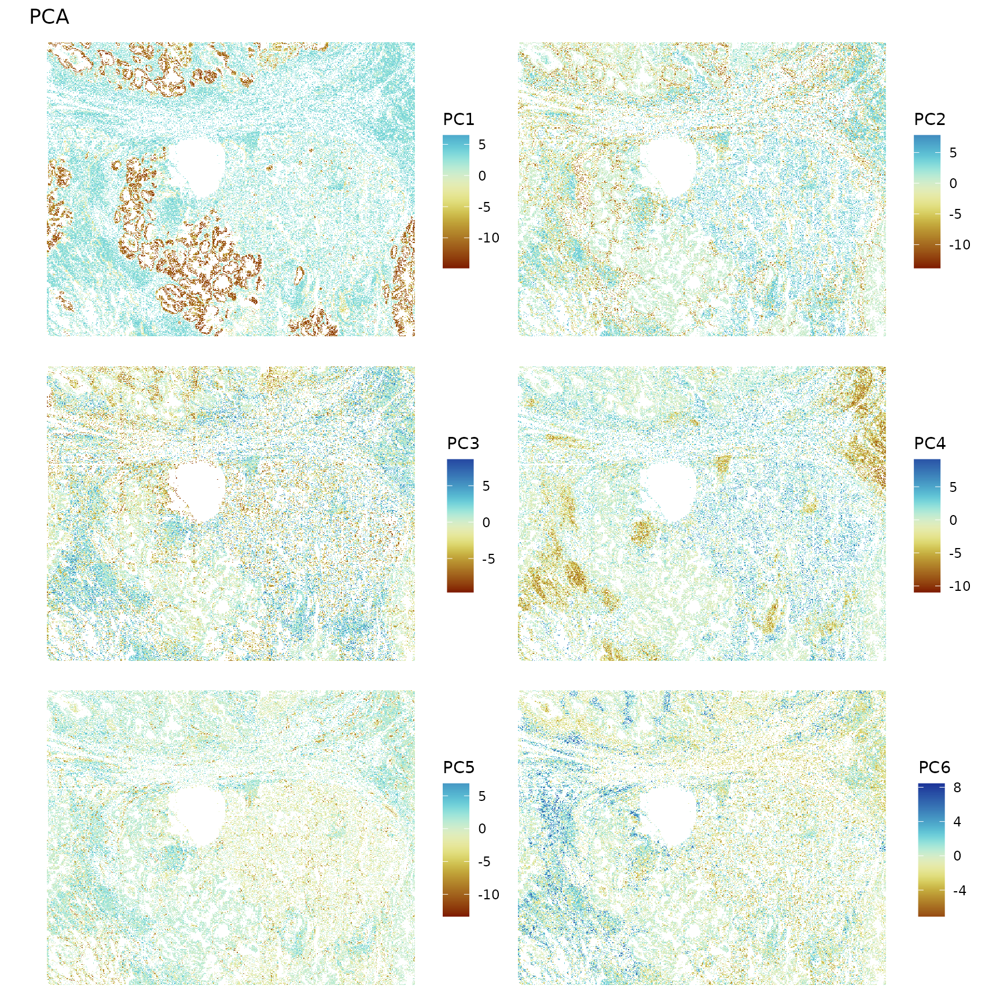
plotUMAP(sfe, colour_by = "cluster")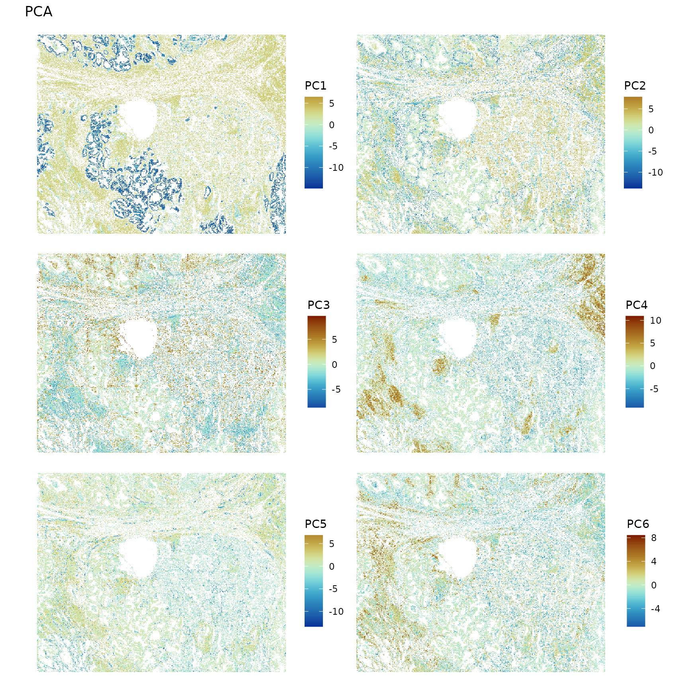
plotSpatialFeature(sfe, "cluster", colGeometryName = "cellSeg")
Another piece of aRt! I really want to print it out, frame it, and put it on the wall.
Further analyses that can be done at this stage:
- Which and how many cell types are in the neighborhood of each cell?
- Which cell types tend to co-localize?
- Find spatial regions based on cell type colocalization, which can be done with the R package
spicyR(Canete et al. 2022)
Differential expression
Cluster marker genes are found with Wilcoxon rank sum test as commonly done for scRNA-seq.
markers <- findMarkers(sfe, groups = colData(sfe)$cluster,
test.type = "wilcox", pval.type = "all", direction = "up")It’s already sorted by p-values
markers[[6]]
#> DataFrame with 980 rows and 12 columns
#> p.value FDR summary.AUC AUC.1 AUC.2 AUC.3 AUC.4
#> <numeric> <numeric> <numeric> <numeric> <numeric> <numeric> <numeric>
#> IGKC 0 0 0.886220 0.916674 0.902230 0.855810 0.919104
#> IGHG1 0 0 0.870429 0.895157 0.882323 0.836324 0.899743
#> IGHG2 0 0 0.853809 0.882468 0.868460 0.820343 0.883634
#> XBP1 0 0 0.819309 0.853902 0.828680 0.841712 0.834907
#> MZB1 0 0 0.773729 0.797467 0.792704 0.764919 0.794961
#> ... ... ... ... ... ... ... ...
#> VEGFA 1 1 0.243503 0.508913 0.456377 0.510560 0.467930
#> VIM 1 1 0.185879 0.609866 0.368711 0.427011 0.393079
#> VWF 1 1 0.230489 0.509358 0.505214 0.502174 0.502987
#> YBX3 1 1 0.315843 0.525782 0.446604 0.475401 0.451682
#> ZFP36 1 1 0.302163 0.546794 0.440116 0.476302 0.396124
#> AUC.5 AUC.7 AUC.8 AUC.9 AUC.10
#> <numeric> <numeric> <numeric> <numeric> <numeric>
#> IGKC 0.919945 0.922712 0.901805 0.886220 0.937943
#> IGHG1 0.900523 0.900002 0.881820 0.870429 0.917872
#> IGHG2 0.885282 0.882786 0.866664 0.853809 0.897537
#> XBP1 0.837337 0.785167 0.830170 0.819309 0.789964
#> MZB1 0.792701 0.795958 0.782687 0.773729 0.801084
#> ... ... ... ... ... ...
#> VEGFA 0.489021 0.399374 0.511659 0.465990 0.243503
#> VIM 0.185879 0.527159 0.386313 0.342166 0.651976
#> VWF 0.230489 0.492060 0.500912 0.499264 0.499925
#> YBX3 0.335892 0.322215 0.493629 0.480576 0.315843
#> ZFP36 0.302163 0.420099 0.455934 0.380452 0.366587Get the the significant marker for each cluster to plot
genes_use <- vapply(markers, function(x) rownames(x)[1], FUN.VALUE = character(1))
plotExpression(sfe, genes_use, x = "cluster", colour_by = "cluster")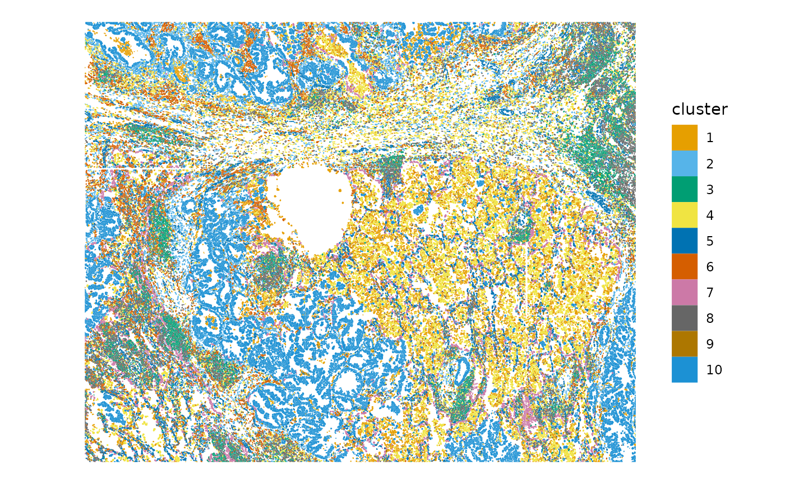
Plot more top marker genes in a heatmap
genes_use2 <- unique(unlist(lapply(markers, function(x) rownames(x)[1:5])))
plotGroupedHeatmap(sfe, genes_use2, group = "cluster", colour = scales::viridis_pal()(100))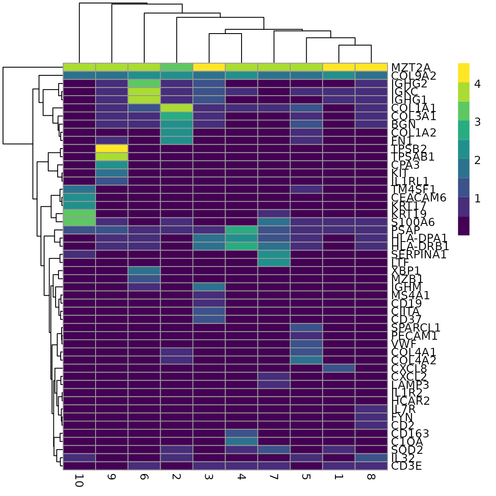
Local spatial statistics of marker genes
Plot those genes in space
plotSpatialFeature(sfe, genes_use, colGeometryName = "cellSeg", ncol = 2)
Moran’s I of these marker genes
rowData(sfe)[genes_use, "moran_sample01", drop = FALSE]
#> DataFrame with 10 rows and 1 column
#> moran_sample01
#> <numeric>
#> MZT2A 0.199125
#> COL1A1 0.394799
#> IGHM 0.293228
#> HLA-DPA1 0.242432
#> COL4A1 0.213591
#> IGKC 0.425206
#> SERPINA1 0.254086
#> IL7R 0.177631
#> TPSB2 0.206095
#> KRT19 0.770417Local Moran’s I of these marker genes
sfe <- runUnivariate(sfe, "localmoran", features = genes_use, colGraphName = "knn5",
BPPARAM = MulticoreParam(2))
plotLocalResult(sfe, type = "localmoran", features = genes_use,
colGeometryName = "cellSeg", ncol = 2, divergent = TRUE,
diverge_center = 0)
#> Warning in .check_features_lr(sfe, type, features, sample_id, colGeometryName, :
#> Features HLA-DPA1 are absent in type localmoran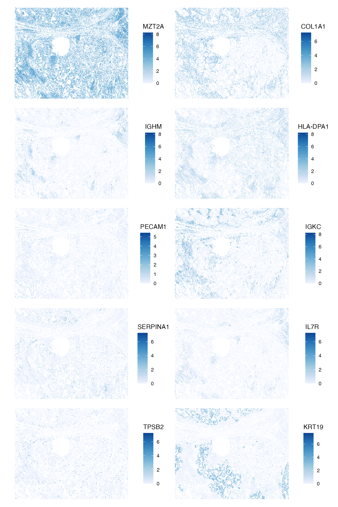
It seems that some histological regions tend to be more spatially homogenous in gene expression than others.
LOSH for these marker genes
sfe <- runUnivariate(sfe, "LOSH", features = genes_use, colGraphName = "knn5",
BPPARAM = MulticoreParam(2))
plotLocalResult(sfe, type = "LOSH", features = genes_use,
colGeometryName = "cellSeg", ncol = 2)
#> Warning in .check_features_lr(sfe, type, features, sample_id, colGeometryName, :
#> Features HLA-DPA1 are absent in type LOSH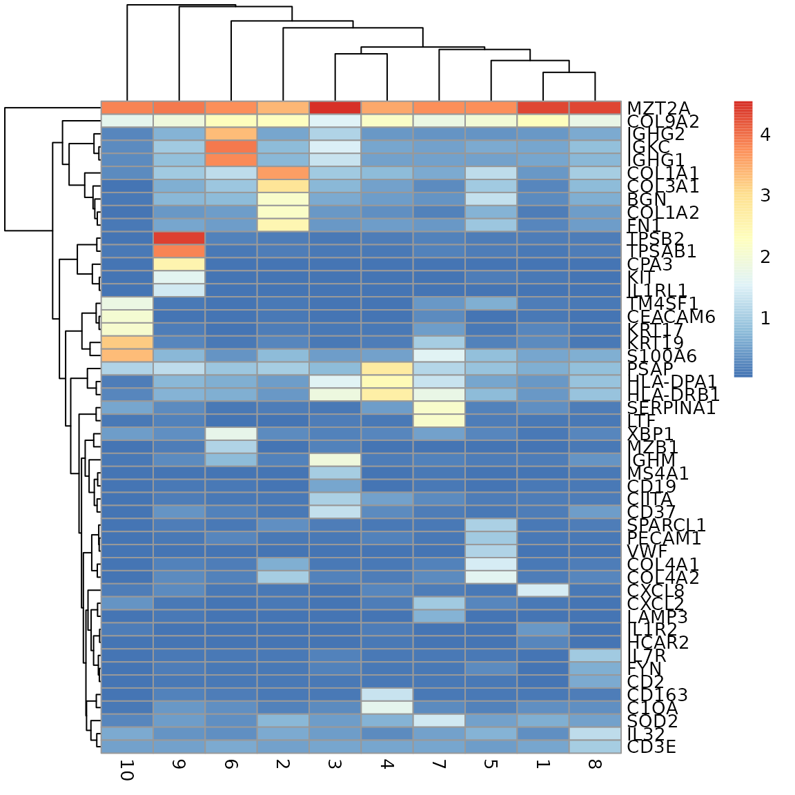
Session Info
sessionInfo()
#> R version 4.2.1 (2022-06-23)
#> Platform: x86_64-pc-linux-gnu (64-bit)
#> Running under: Ubuntu 20.04.5 LTS
#>
#> Matrix products: default
#> BLAS: /usr/lib/x86_64-linux-gnu/blas/libblas.so.3.9.0
#> LAPACK: /usr/lib/x86_64-linux-gnu/lapack/liblapack.so.3.9.0
#>
#> locale:
#> [1] LC_CTYPE=C.UTF-8 LC_NUMERIC=C LC_TIME=C.UTF-8
#> [4] LC_COLLATE=C.UTF-8 LC_MONETARY=C.UTF-8 LC_MESSAGES=C.UTF-8
#> [7] LC_PAPER=C.UTF-8 LC_NAME=C LC_ADDRESS=C
#> [10] LC_TELEPHONE=C LC_MEASUREMENT=C.UTF-8 LC_IDENTIFICATION=C
#>
#> attached base packages:
#> [1] stats4 stats graphics grDevices utils datasets methods
#> [8] base
#>
#> other attached packages:
#> [1] SpatialFeatureExperiment_0.99.9 BiocSingular_1.13.1
#> [3] BiocParallel_1.30.4 spdep_1.2-7
#> [5] sf_1.0-8 spData_2.2.0
#> [7] sp_1.5-0 stringr_1.4.1
#> [9] patchwork_1.1.2 bluster_1.6.0
#> [11] scran_1.24.1 scater_1.24.0
#> [13] ggplot2_3.3.6 scuttle_1.7.4
#> [15] SpatialExperiment_1.6.1 SingleCellExperiment_1.18.1
#> [17] SummarizedExperiment_1.26.1 Biobase_2.57.1
#> [19] GenomicRanges_1.48.0 GenomeInfoDb_1.33.14
#> [21] IRanges_2.31.2 S4Vectors_0.35.4
#> [23] BiocGenerics_0.43.4 MatrixGenerics_1.9.1
#> [25] matrixStats_0.62.0 SFEData_0.99.5
#> [27] Voyager_0.99.7
#>
#> loaded via a namespace (and not attached):
#> [1] utf8_1.2.2 R.utils_2.12.0
#> [3] tidyselect_1.2.0 RSQLite_2.2.18
#> [5] AnnotationDbi_1.59.1 grid_4.2.1
#> [7] DropletUtils_1.17.3 munsell_0.5.0
#> [9] ScaledMatrix_1.5.1 codetools_0.2-18
#> [11] ragg_1.2.3 units_0.8-0
#> [13] statmod_1.4.37 withr_2.5.0
#> [15] colorspace_2.0-3 filelock_1.0.2
#> [17] highr_0.9 knitr_1.40
#> [19] wk_0.7.0 labeling_0.4.2
#> [21] GenomeInfoDbData_1.2.8 pheatmap_1.0.12
#> [23] bit64_4.0.5 farver_2.1.1
#> [25] rhdf5_2.40.0 rprojroot_2.0.3
#> [27] vctrs_0.4.2 generics_0.1.3
#> [29] xfun_0.34 BiocFileCache_2.4.0
#> [31] R6_2.5.1 ggbeeswarm_0.6.0
#> [33] rsvd_1.0.5 locfit_1.5-9.6
#> [35] isoband_0.2.6 bitops_1.0-7
#> [37] rhdf5filters_1.9.0 cachem_1.0.6
#> [39] DelayedArray_0.23.2 assertthat_0.2.1
#> [41] promises_1.2.0.1 scales_1.2.1
#> [43] beeswarm_0.4.0 gtable_0.3.1
#> [45] beachmat_2.13.4 rlang_1.0.6
#> [47] systemfonts_1.0.4 splines_4.2.1
#> [49] scico_1.3.1 BiocManager_1.30.18
#> [51] s2_1.1.0 yaml_2.3.6
#> [53] httpuv_1.6.6 tools_4.2.1
#> [55] ellipsis_0.3.2 jquerylib_0.1.4
#> [57] RColorBrewer_1.1-3 proxy_0.4-27
#> [59] Rcpp_1.0.9 sparseMatrixStats_1.8.0
#> [61] zlibbioc_1.43.0 classInt_0.4-8
#> [63] purrr_0.3.5 RCurl_1.98-1.9
#> [65] deldir_1.0-6 viridis_0.6.2
#> [67] cowplot_1.1.1 ggrepel_0.9.1
#> [69] cluster_2.1.3 fs_1.5.2
#> [71] magrittr_2.0.3 magick_2.7.3
#> [73] ggnewscale_0.4.8 mime_0.12
#> [75] evaluate_0.17 xtable_1.8-4
#> [77] gridExtra_2.3 compiler_4.2.1
#> [79] tibble_3.1.8 KernSmooth_2.23-20
#> [81] crayon_1.5.2 R.oo_1.25.0
#> [83] htmltools_0.5.3 mgcv_1.8-40
#> [85] later_1.3.0 DBI_1.1.3
#> [87] ExperimentHub_2.5.0 dbplyr_2.2.1
#> [89] MASS_7.3-57 rappdirs_0.3.3
#> [91] boot_1.3-28 Matrix_1.5-1
#> [93] cli_3.4.1 R.methodsS3_1.8.2
#> [95] parallel_4.2.1 metapod_1.5.0
#> [97] igraph_1.3.5 pkgconfig_2.0.3
#> [99] pkgdown_2.0.6 vipor_0.4.5
#> [101] bslib_0.4.0 dqrng_0.3.0
#> [103] XVector_0.37.1 digest_0.6.30
#> [105] RcppAnnoy_0.0.19 Biostrings_2.65.6
#> [107] rmarkdown_2.17 uwot_0.1.14
#> [109] edgeR_3.39.6 DelayedMatrixStats_1.18.2
#> [111] curl_4.3.3 shiny_1.7.2
#> [113] rjson_0.2.21 lifecycle_1.0.3
#> [115] nlme_3.1-157 jsonlite_1.8.2
#> [117] Rhdf5lib_1.19.2 BiocNeighbors_1.14.0
#> [119] desc_1.4.2 viridisLite_0.4.1
#> [121] limma_3.53.10 fansi_1.0.3
#> [123] pillar_1.8.1 lattice_0.20-45
#> [125] KEGGREST_1.36.3 fastmap_1.1.0
#> [127] httr_1.4.4 interactiveDisplayBase_1.34.0
#> [129] glue_1.6.2 png_0.1-7
#> [131] BiocVersion_3.16.0 bit_4.0.4
#> [133] class_7.3-20 stringi_1.7.8
#> [135] sass_0.4.2 HDF5Array_1.25.2
#> [137] blob_1.2.3 textshaping_0.3.6
#> [139] AnnotationHub_3.5.2 memoise_2.0.1
#> [141] dplyr_1.0.10 irlba_2.3.5.1
#> [143] e1071_1.7-11